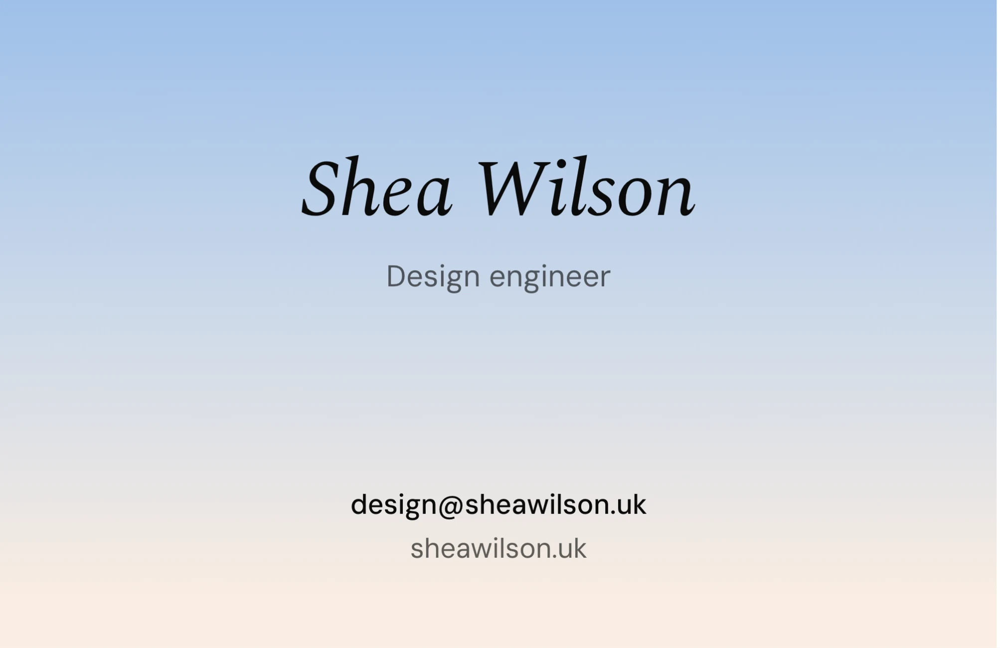
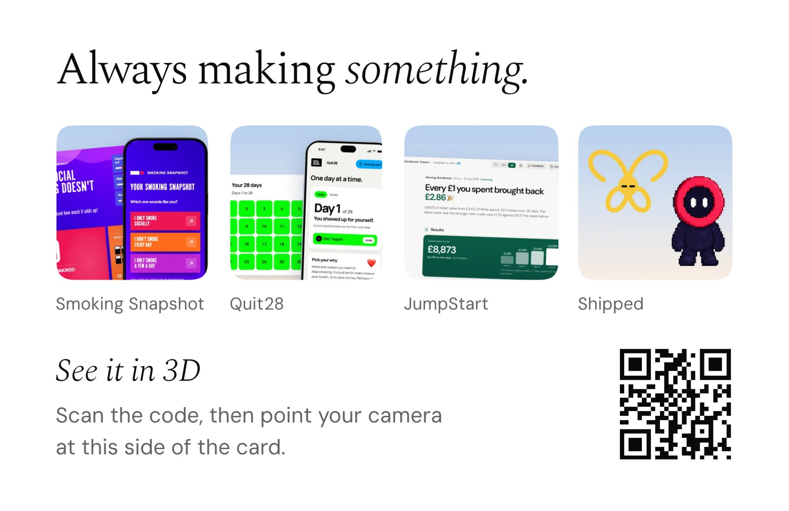

Off the page.
The same work, four ways. Two of them use your phone’s camera to put it in the room with you.
On your deskA small model you can put on a real table
The same work, four ways. Two of them use your phone’s camera to put it in the room with you.
On your deskA small model you can put on a real table
Point your phone at the back and the work lifts off it. No card? You can try it on screen.

